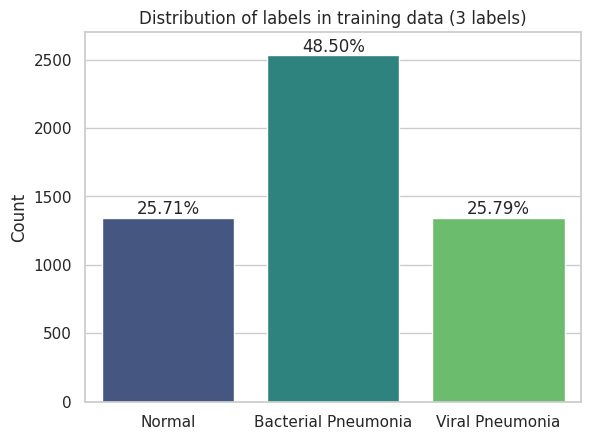
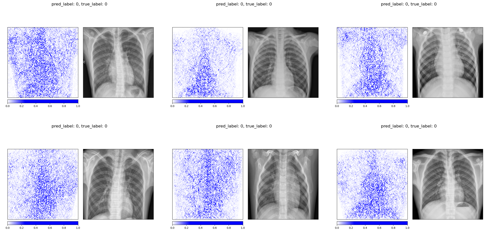
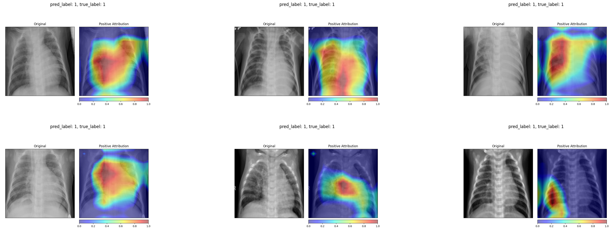
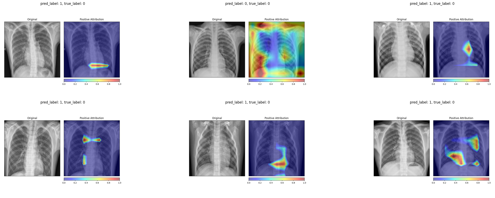

1 Introduction
Pneumonia remains one of the leading causes of death worldwide, particularly among children and the elderly. Diagnosis typically relies on a radiologist interpreting a chest X-ray, looking for characteristic opacities in the lung fields that indicate fluid or inflammation. This is a task that deep learning models have shown remarkable aptitude for, sometimes matching or exceeding radiologist-level performance (Rajpurkar et al. 2017). But high accuracy alone is not enough. A clinician will not trust a model that simply outputs “pneumonia” without any indication of why. To be useful in practice, the model needs to point to the regions in the image that drove its decision.
In this post we train a CNN to classify chest X-rays as healthy or pneumonia, and then apply two popular attribution methods to visualize what the model has learned. Integrated Gradients provides pixel-level attribution scores by accumulating gradients along a path from a baseline image to the input. Grad-CAM produces coarser but more spatially coherent heatmaps by leveraging the gradients flowing into the last convolutional layer. We compare both methods and subject them to a data randomization test to verify that they produce genuine explanations rather than artifacts.
2 The Data
The dataset consists of pediatric chest X-ray images from Guangzhou Women and Children’s Medical Center, split into three classes: normal, bacterial pneumonia, and viral pneumonia. For our classification task we merge the two pneumonia subtypes into a single positive class, giving us a binary problem.
|  |

|
The label distribution is heavily skewed. Roughly 74% of images show pneumonia while only 26% are normal. A classifier that always predicts pneumonia would achieve 74% accuracy without learning anything, so balanced accuracy and F1 become the more informative metrics.
2.1 Visual Differences
Even to a non-expert eye, the two classes look different. Normal X-rays tend to be sharper with clearly delineated lung fields, visible rib structure, and a well-defined cardiac silhouette. Pneumonia images often show diffuse haziness or localized opacities that obscure parts of the lung, making it harder to distinguish the heart from the surrounding tissue.

2.2 Preprocessing and Potential Bias
Raw medical images come with practical complications. The X-rays in this dataset have varying resolutions, some contain text annotations (an “R” marker, or “A-P” labels in the corner), and the class imbalance is substantial. Each of these can introduce bias if not handled carefully. A model could learn to associate the “A-P” annotation with pneumonia rather than learning actual pathological features.
Our preprocessing pipeline addresses these issues. We resize all images to 256x256 pixels, then apply a center crop to 224x224 to remove corner annotations. During training we additionally apply random rotations (up to 10 degrees), random horizontal flips, and random grayscale conversion for augmentation. These transformations make the model more robust to variations in X-ray orientation and contrast, while the center crop removes the text labels that could otherwise serve as spurious shortcuts.

3 The CNN: ResNet-50
3.1 Convolutional Neural Networks for Images
A convolutional neural network processes an image by sliding learned filters across the spatial dimensions. For a 2D input \(\mathbf{X} \in \mathbb{R}^{H \times W}\) and a filter \(\mathbf{K} \in \mathbb{R}^{k \times k}\), the convolution at position \((i, j)\) computes:
\[ (\mathbf{X} * \mathbf{K})_{i,j} = \sum_{m=0}^{k-1} \sum_{n=0}^{k-1} K_{m,n} \cdot X_{i+m, j+n} \]
Stacking multiple convolutional layers with non-linear activations (typically ReLU) and pooling operations builds a hierarchy of feature representations. The early layers learn low-level features like edges and textures. The intermediate layers combine these into more complex patterns like shapes and anatomical structures. The deepest layers encode high-level semantic concepts that are directly relevant for classification.
3.2 Residual Learning
Training very deep networks is notoriously difficult because gradients tend to vanish or explode as they propagate through many layers. The residual learning framework (He et al. 2016) addresses this by introducing skip connections that let the signal bypass blocks of layers:
\[ \mathbf{y} = \mathcal{F}(\mathbf{x}, \{W_i\}) + \mathbf{x} \]
where \(\mathcal{F}\) represents the stacked convolutional layers within a residual block. Instead of learning the full mapping from \(\mathbf{x}\) to \(\mathbf{y}\), the network only needs to learn the residual \(\mathcal{F}(\mathbf{x}) = \mathbf{y} - \mathbf{x}\), i.e. the correction on top of the identity. If the optimal mapping is close to the identity (which is common in deeper layers), the residual is close to zero and easy to learn. This simple modification enables the training of networks with 50, 100, or even 1000 layers.
3.3 Transfer Learning with ResNet-50
ResNet-50 is a 50-layer residual network originally trained on ImageNet (Deng et al. 2009), a dataset of over 1.2 million natural images spanning 1000 classes. The convolutional backbone learns general visual features (edges, textures, shapes) that transfer well to other image domains, including medical imaging. We take a pretrained ResNet-50 and replace its final fully connected layer with a custom classification head consisting of linear layers, ReLU activations, and dropout for regularization. The output layer produces two logits for binary classification.

The model achieves 87% accuracy, 83% balanced accuracy, and an F1 score of 0.91. Recall is notably high at 0.99, meaning the model catches nearly every pneumonia case, but precision is lower at 0.83, indicating a non-trivial false positive rate. In a clinical screening context this trade-off is often acceptable: missing a pneumonia case (false negative) is far more dangerous than sending a healthy patient for additional testing (false positive).
4 Explaining the Predictions
4.1 Integrated Gradients
Integrated Gradients (Sundararajan, Taly, and Yan 2017) is an attribution method that assigns an importance score to each input pixel by asking: how does the model’s output change as we gradually transition from a blank baseline image to the actual input? Formally, for an input image \(\mathbf{x}\), a baseline \(\mathbf{x}'\) (typically an all-black image), and a model \(F\), the attribution for pixel \(i\) is:
\[ \text{IG}_i(\mathbf{x}) = (x_i - x_i') \int_{\alpha=0}^{1} \frac{\partial F(\mathbf{x}' + \alpha(\mathbf{x} - \mathbf{x}'))}{\partial x_i} \, d\alpha \]
The integral accumulates the gradients of the model output with respect to pixel \(i\) along a straight-line path from the baseline to the input. In practice the integral is approximated by a Riemann sum over a finite number of interpolation steps. This method satisfies two desirable properties. Completeness guarantees that the attributions sum to the difference between the model’s output at the input and at the baseline, \(F(\mathbf{x}) - F(\mathbf{x}')\). Sensitivity ensures that if a feature contributes to changing the output relative to the baseline, it receives a non-zero attribution.
The attribution maps for healthy patients tend to highlight the lung fields and the spine in a relatively focused manner, consistent with the model confirming the absence of pathology in these regions.

For pneumonia patients, the attributions spread across a broader area of the chest, reflecting the diffuse nature of pneumonia opacities. The model does not focus on a single localized region but instead distributes importance across the entire affected area.

One important caveat is that Integrated Gradients is sensitive to the choice of baseline. Using an all-black image (pixel values of 0) versus an all-white image (pixel values of 1) produces noticeably different attribution maps. The all-black baseline tends to produce sharper, more anatomically focused attributions because the path integral traverses more of the relevant gradient landscape. The all-white baseline, being closer to the bright background regions of an X-ray, produces noisier results. This baseline dependency is a known limitation of the method and should be kept in mind when interpreting the maps.
 Baseline: all-black (pixel value 0) Baseline: all-black (pixel value 0)
|
 Baseline: all-white (pixel value 1) Baseline: all-white (pixel value 1)
|
4.2 Grad-CAM
Gradient-weighted Class Activation Mapping (Selvaraju et al. 2017) takes a fundamentally different approach. Instead of computing per-pixel attributions, it produces a coarse localization map by leveraging the spatial information preserved in the last convolutional layer. For a target class \(c\), the method first computes the gradient of the class score \(y^c\) with respect to the feature maps \(A^k\) of the last convolutional layer:
\[ \alpha_k^c = \frac{1}{Z} \sum_i \sum_j \frac{\partial y^c}{\partial A^k_{ij}} \]
These gradients are global-average-pooled to produce a weight \(\alpha_k^c\) for each feature map \(k\), representing how important that feature map is for predicting class \(c\). The Grad-CAM heatmap is then a weighted combination of the feature maps, passed through a ReLU to retain only positive contributions:
\[ L^c_{\text{Grad-CAM}} = \text{ReLU}\!\left(\sum_k \alpha_k^c A^k\right) \]
The resulting heatmap has the spatial resolution of the last convolutional layer (7x7 for ResNet-50) and is upsampled to the input image size for visualization. Because Grad-CAM operates on feature maps rather than individual pixels, it produces smoother, more spatially coherent attribution maps than Integrated Gradients. The trade-off is lower spatial resolution: it can tell you which region matters but not exactly which pixels.
For healthy patients, the Grad-CAM heatmaps concentrate on the central and lower lung regions, highlighting areas where the model confirms normal tissue.

For pneumonia patients, the activation maps expand to cover broader regions of the chest, often focusing on the areas where opacities are visible in the original X-ray. In several examples, the strongest activations align precisely with the haziest regions of the lung fields.

4.3 Comparing the Two Methods
The two attribution methods tell a broadly consistent story. Both highlight the lung fields as the most decision-relevant region. Both show more diffuse attribution patterns for pneumonia cases and more localized patterns for healthy ones. The key difference is granularity. Integrated Gradients produces fine-grained, pixel-level attributions that can appear noisy, while Grad-CAM produces smoother heatmaps that are easier to interpret at a glance but lose fine spatial detail. For a radiologist who wants to quickly see where the model is “looking”, Grad-CAM is the more practical tool. For a researcher who wants to understand exactly which pixel intensities drive the output, Integrated Gradients provides more information.
5 Data Randomization Test
5.1 The Idea
A natural worry with any attribution method is that it might produce plausible-looking maps regardless of whether the model has actually learned anything meaningful. The data randomization test, proposed by Adebayo et al. (2018), provides a simple sanity check. The idea is to retrain the model on randomly permuted labels and then examine whether the attribution maps change. A model trained on random labels cannot learn any genuine relationship between image content and diagnosis. If the attribution method still produces the same maps, it is reflecting properties of the input image rather than the model’s learned decision function.
5.2 Results
We retrain the same ResNet-50 architecture on the pneumonia dataset with randomly permuted training labels for 200 epochs. As expected, the model’s balanced accuracy drops to 0.52, essentially random chance. The Integrated Gradients maps for the permuted-label model look qualitatively different from those of the properly trained model. The attributions for healthy and diseased patients become indistinguishable, with both showing a similar scattered pattern that outlines anatomical structures without any class-specific focus.
 Integrated Gradients on truly healthy patients (permuted-label model) Integrated Gradients on truly healthy patients (permuted-label model)
|
 Integrated Gradients on truly diseased patients (permuted-label model) Integrated Gradients on truly diseased patients (permuted-label model)
|
The Grad-CAM maps change even more dramatically. The permuted-label model produces much smaller, more fragmented activation regions that no longer correspond to clinically meaningful areas of the lung.
|  Grad-CAM on truly healthy patients (permuted-label model) |
 Grad-CAM on truly diseased patients (permuted-label model) Grad-CAM on truly diseased patients (permuted-label model)
|
Both methods pass the data randomization test. The attribution maps change substantially when the model is trained on meaningless labels, confirming that they reflect the model’s learned decision function rather than low-level image properties. This is an important validation step that is often overlooked when deploying explainability tools in practice.
6 Reflections
The CNN achieves reasonable classification performance (0.91 F1, 0.83 balanced accuracy), though it falls short of the near-perfect scores we saw in the ECG classification post. This is not surprising. Chest X-ray interpretation is inherently more ambiguous than ECG classification. The boundary between a normal and a mildly affected lung can be subtle, imaging conditions vary widely, and the model must learn to ignore irrelevant visual clutter (text annotations, equipment artifacts) that is absent from standardized ECG recordings.
The attribution maps provide reassuring evidence that the model focuses on clinically relevant regions. Grad-CAM in particular highlights areas within the chest cavity that correspond to visible opacities in pneumonia cases. For healthy patients, both methods attribute importance to the lung fields in a way that suggests the model is confirming the absence of pathological findings rather than relying on spurious shortcuts.
That said, the attribution maps are not perfectly consistent across all samples. Individual images occasionally show unexpected attribution patterns. This is a reminder that post-hoc explainability methods provide approximate insights into model behavior, not definitive proof of correct reasoning. The data randomization test adds a useful layer of confidence by confirming that the explanations are at least model-dependent, but it cannot tell us whether the model’s reasoning is medically sound. That judgment still requires a clinician in the loop.
The broader lesson is that explainability in medical imaging is not a single tool but a workflow. Train the model. Visualize its attributions with multiple methods. Verify those attributions with sanity checks. And ultimately, have a domain expert evaluate whether the highlighted regions make clinical sense. None of these steps alone is sufficient, but together they build a case for or against trusting the model’s decisions.